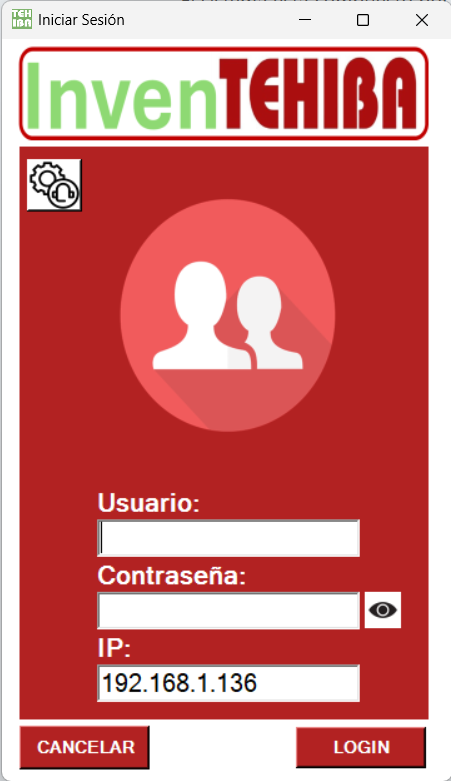
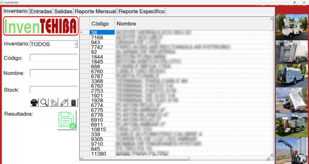
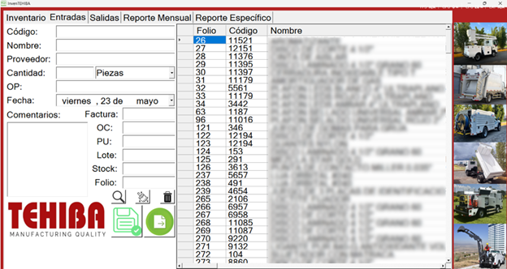
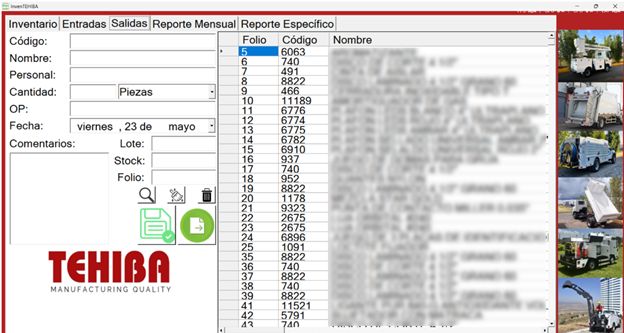
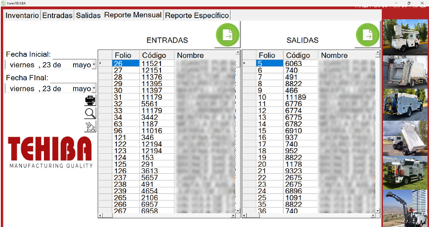
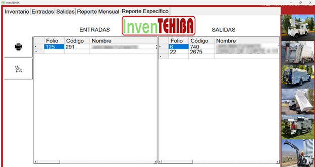
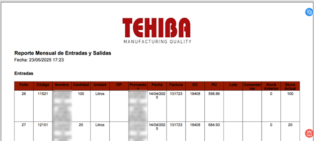

Descripción del Proyecto
Este sistema fue desarrollado en VB.NET utilizando archivos de Excel como base de datos, ideal para pequeñas empresas con infraestructura limitada. La solución está diseñada para la gestión eficiente de inventarios industriales, permitiendo portabilidad y fácil migración entre equipos.
El sistema está compuesto por los siguientes módulos clave:
- Login y Seguridad: Inicio de sesión con autenticación por usuario, contraseña e IP. Incluye control de permisos para restringir accesos a funciones como edición o eliminación.
- Inventario: Registro y administración de materiales como piezas, consumibles o herramienta. Incluye filtros por tipo, búsqueda por código o nombre, y permite exportar reportes detallados.
- Entradas: Registro de nuevas existencias mediante código (autocompletado), proveedor, cantidad, unidad de medida, OP, fecha, lote y comentarios. Se generan folios automáticos y se integra con el módulo de Reportes Específicos.
- Salidas: Registro de materiales entregados al personal. Similar al módulo de entradas, pero con campos simplificados. Descuenta automáticamente del stock global.
- Reportes: Vista general de todas las entradas y salidas. Se pueden aplicar filtros por fechas, exportar en PDF, y enviar datos al módulo de Reporte Específico.
- Reporte Específico: Generación de documentos filtrados por tipo de operación, periodos no consecutivos o múltiples rangos de fechas. Ideal para auditorías o seguimiento puntual.
Este sistema ha sido probado en entornos reales de producción, ayudando a reducir errores de inventario y facilitando la trazabilidad de materiales, manteniendo la simplicidad de uso gracias al soporte en Excel como almacenamiento de datos.
Galería






